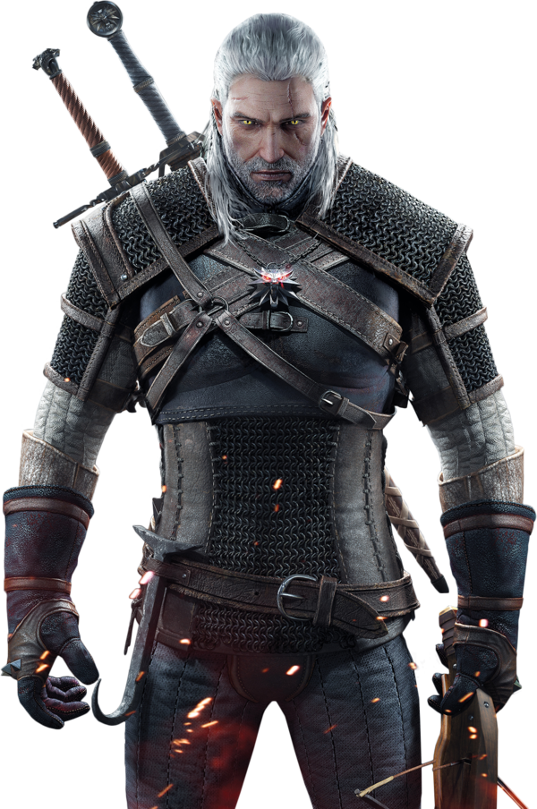
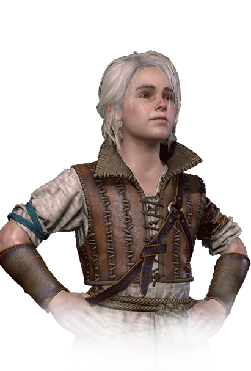

The Witcher 3: Wild Hunt is the game that Poland's iconoclastic CD Projekt Red has been threatening to make for a while now, ever since it debuted this dark fantasy series, based on the books by Andrzej Sapkowski, in 2007.
Wild Hunt is a grand adventure that feels distinctly of its time. It manages to set new standards for video game technology while accentuating the fleeting nature of technological achievement as an end unto itself. It is a worthy exploration of friendship and family, mixing scenes of great sorrow with scenes of ridiculous lustiness, tempering its melancholy with bright splashes of joy and merry monster guts. Come for the epic showdown between good and evil; stay for the unicorn sex.
In the open world of Wild Hunt, you chart your own path to adventure. You play as a bounty hunter, a man of the road. You set your own goals and choose your own destinations. Go after the bounty on the head of a nasty monster pestering a village or help a scheming prince who needs a dirty job done -- no matter what style of epic questing you crave, The Witcher will provide it.
Geralt of Rivia is a witcher and the main protagonist of the Witcher series. Like all witchers, Geralt is a monster hunter for hire. He possesses superhuman abilities and is a master swordsman.
During the Trial of the Grasses, Geralt exhibited unusual tolerance for the mutagens that grant witchers their abilities. Accordingly, Geralt was subjected to further experimental mutagens which rendered his hair white and may have given him greater speed, strength, and stamina than his fellow witchers.
Cirilla Fiona Elen Riannon (known as Ciri or the Lion Cub of Cintra), was born in 1253 or 1252, and most likely during the Belleteyn holiday. She is a princess of Cintra, the daughter of Pavetta and Duny and granddaugher of Queen Calanthe. She is Geralt's adopted daughter - but that would be a gross simplification. Ciri is much more. She is his Destiny, his Unexpected Child, someone bound to the witcher by Fate's most inextricably tangled fetters.
Following age-old witcher tradition, Geralt took Ciri to Kaer Morhen when she came into his care. There he and Vesemir taught her in the ways of the professional monster slayer. It was then that her magic talents were first revealed, and they discovered she was a Source.
